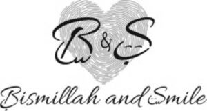

Trade Mark Journal No.2025/026 27 June 2025
WO0000001847206 (16,18,21,25)
Office of origin: Switzerland
Date of International Registration:26 January 2025
Date of designation in the UK:
26 January 2025

International priority date claimed: 13 January 2025
(Switzerland)
- Class 16
- Paper and cardboard; bookbinding material; photographs; stationery and office requisites, except furniture; drawing materials and materials for artists; paint brushes; instructional or teaching material; plastic sheets, films and bags for wrapping and packaging; printers' type, printing blocks; garbage bags of paper or of plastics; tissues of paper for removing make-up; transfers (decalcomanias); address plates for addressing machines; address stamps; addressing machines; folders for papers; document files (stationery); albums; almanacs; moisteners [office requisites]; announcement cards (stationery); document laminators (for office use); aquarelles; architects' models; arithmetical tables; wristbands for the retention of writing instruments; atlases; stickers (stationery); colouring pictures; baking paper; banknotes; money clips; banners of paper; moisteners for gummed surfaces (office requisites); mats of paper for beer glasses; pictures; biological samples for use in microscopy (teaching materials); blank punch cards for knitting machines; blueprints; pencils; pencil holders; pencil leads; pencil lead holders; plastic blister packs for packaging; pads (stationery); floor decals; booklets; paperweights; letter trays; postage stamps; writing paper; pamphlets; bookbinding material; cords for bookbinding; bookbinding apparatus and machines (office equipment); cloth for bookbinding; fabrics for bookbinding; books; bookends; office requisites, except furniture; clips for offices; animation cels; chromolithographs (chromos); clips for name badge holders (office requisites); retractable reels for name badge holders (office requisites); comic books; plastic cling film, extensible, for palletization; diagrams; document holders (stationery); printed matter; printers' reglets; electrotypes; printing blocks; inking sheets for document reproducing machines; inking sheets for duplicators; printers' blankets, not of textile; printing type; type (numerals and letters); covers (stationery); tickets; pencil sharpeners, electric or non-electric; pencil sharpening machines, electric or non-electric; typewriters, electric or non-electric; obliterating stamps; labels of paper or cardboard; stencil cases; bunting of paper; flags of paper; paper creasers (office requisites); binding strips (bookbinding); inking ribbons; typewriter ribbons; barcode ribbons; spools for inking ribbons; artists' watercolour saucers; inking pads; paint trays; penholders; pen clips; pen cases; pens (office requisites); pen wipers; humidity control sheets of paper or plastic for foodstuff packaging; figurines of papier mâché; filtering materials of paper; filter paper; fingerstalls for office use; isinglass for stationery or household purposes; bottle envelopes of paper or cardboard; bottle wrappers of paper or cardboard; flip charts; correcting fluids (office requisites); flyers; seaweed-based film for wrapping; plastic film for wrapping; sheets of reclaimed cellulose for wrapping; moulds for modelling clays (artists' materials); forms, printed; photographs (printed); photo-engravings; franking machines for office use; fountain pens; padding materials of paper or cardboard; printed geographical maps; printed sheet music; printed coupons; trays for sorting and counting money; baggage claim check tags of paper; paintings (pictures) framed or unframed; song books; glitter for stationery; terrestrial globes; greeting cards; graphic representations; graphic prints; graphic reproductions; etching needles; engraving plates; engravings; gums (adhesives) for stationery or household purposes; elastic bands for offices; gummed tape (stationery); gummed cloth for stationery purposes; name badge holders (office requisites); stands for pens and pencils; manuals (handbooks); band labelling appliances; hand-rests for painters; stapling presses (office requisites); hectographs; histological sections (teaching materials); wood pulp paper; wood pulp board (stationery); envelopes (stationery); hat boxes of cardboard; paper coffee filters; calendars; index cards (stationery); cards; tags for index cards; cardboard tubes; catalogues; adhesive tapes for stationery or household purposes; apparatus for mounting photographs; gluten (glue) for stationery or household purposes; adhesives for stationery or household purposes; adhesive tape dispensers (office requisites); clipboards (office requisites); carbon paper; copying paper (stationery); correcting tapes (office requisites); correcting ink (heliography); chalk for lithography; chalk holders; balls for ball-point pens; French curves; sleeved bibs of paper; bibs of paper; food bags of paper or plastics; glue for stationery or household purposes; bookmarks; steel letters; luminous paper; lithographs; lithographic works of art; lithographic stones; office perforators; perforated cards for Jacquard looms; punches (office requisites); blotters; plastic bubble film for wrapping; magnetic boards being office requisites; colouring books; painters' brushes; canvas for painting; palettes for painters; house painters' rollers; paint boxes for use in schools; paintbrushes; painters' easels; marking chalk; marking pens (stationery); graining combs; stencils; mezuzah cases; mezuzah parchments; modelling paste; polymer modelling clay; modelling material; plastics for modelling; modelling clay; modelling wax, not for dental purposes; musical greeting cards; name badges (office requisites); credit card imprinters, non-electric; chart pointers, non-electronic; note books; paper-clips; numbering apparatus; oleographs; files (office requisites); origami folding paper; pantographs (drawing instruments); paper; electrocardiograph paper; papers for painting and calligraphy; paper for recording machines; stationery; paper for medical examination tables; dental tray covers of paper; paper ribbons, other than haberdashery or hair decorations; paper bags for use in the sterilization of medical instruments; paper sheets (stationery); face towels of paper; hand towels of paper; papier mâché; flower-pot covers of paper; paper knives (letter openers); paper bows, other than haberdashery or hair decorations; paper cutters (office requisites); table napkins of paper; handkerchiefs of paper; paper wipes for cleaning; cardboard; drawer liners of paper, perfumed or not; paper party decorations; pastels (crayons); tracing patterns; tracing cloth; tracing paper; parchment paper; seals (stamps); plantable seed paper (stationery); posters; placards of paper or cardboard; advertisement boards of paper or cardboard; plastic bags for pet waste disposal; place mats of paper; packing (cushioning, stuffing) materials of paper or cardboard; portraits; postcards; prospectuses; erasing products; erasers; scrapers [erasers] for offices; erasing shields; etchings; paper for radiograms; ledgers (books); passport holders; rice paper; drawing boards; drawing pens; tracing needles for drawing purposes; drawing pins; T-squares for drawing; loose-leaf binders; newsletters; indexes; cream containers of paper; trading cards, other than for games; absorbent sheets of paper or plastic for foodstuff packaging; stencils (stationery); stencils for decorating food and beverages; boxes of paper or cardboard; holders for cheque books; slate pencils; writing slates; signboards of paper or cardboard; shields (paper seals); tailors' chalk; manifolds [stationery]; sewing patterns; nibs; nibs of gold; inkstands; writing instruments; writing or drawing books; writing chalk; writing cases (stationery); typewriter keys; rollers for typewriters; writing materials; writing cases (sets); writing brushes; desk mats; printed publications; stencil plates; handwriting specimens for copying; school supplies; protective covers for books; tissue paper; page holders; self-adhesive tapes for stationery or household purposes; composing frames (printing); galley racks (printing); sealing wax; sealing machines for offices; sealing compounds for stationery purposes; sealing wafers; stamps (seals); souvenir banknotes; conical paper bags; spray chalk; steel pens; starch paste (adhesive) for stationery or household purposes; steatite (tailor's chalk); sealing stamps; holders for stamps (seals); cases for stamps (seals); stamp pads; stamp stands; prints (engravings); embroidery designs (patterns); pens (writing implements) incorporating tips for operating touchscreen devices; ink; inkwells; ink stones (ink reservoirs); ink sticks; desktop cabinets for stationery (office requisites); table runners of paper; tablemats of paper; tablecloths of paper; table linen of paper; toilet paper; printing sets, portable (office requisites); carrier bags of paper or plastic; transparencies (stationery); Indian inks; envelope sealing machines for offices; teaching materials (except apparatus); coasters of paper; bags (envelopes, pouches) of paper or plastics, for packaging; packaging material made of starches; wrapping paper; mimeographs (duplicators); mimeograph apparatus and machines; square rulers for drawing; vignetting apparatus; viscose sheets for wrapping; waxed paper; blackboards; washi; composing sticks; writing board erasers; drawing materials; drawing pads; drawing sets; drawing instruments; charcoal pencils; squares for drawing; printed timetables; drawing rulers; periodicals; magazines (periodicals); newspapers; paper shredders for office use; paper clasps; numbers (type); cigar bands; compasses for drawing.
- Class 18
- Leather and imitations of leather; Animal skins; luggage and carrying bags; umbrellas and parasols; walking sticks; whips, harness and saddlery; collars, leashes and clothing for animals; briefcases (leatherware); dog waste bag dispensers adapted for use with leashes; sew-on tags of leather for clothing; pouch baby carriers; backpacks for carrying babies; slings for carrying infants; sling bags for carrying babies; beach bags; clothing for pets; mountaineering sticks; harness fittings; covers for horse saddles; pocket wallets; wallet chains; bags for campers; chamois leather, other than for cleaning purposes; kid; covers for animals; attaché cases; boxes of leather or leatherboard; net bags for shopping; wheeled shopping bags; labels of leather; casings, of leather, for springs; umbrella or parasol ribs; nose bags (feed bags); bits for animals (harness); walking sticks; purses; luggage tags; harness for animals; gold beaters' skin; parts of rubber for stirrups; collars for animals; suitcases; suitcase handles; handbags; cattle skins; horseshoes; hat boxes of leather; smart suitcases; game bags; card cases (notecases); cases of leather or leatherboard; boxes of vulcanized fibre; chain mesh purses; chin straps, of leather; garment bags for travel; valises; cat o' nine tails; knee-pads for horses; suitcases with wheels; suitcase packing organizers; compression cubes adapted for luggage; vanity cases, not fitted; credit card cases (wallets); reins for guiding children; girths of leather; imitation leather; mycelium-based imitation leather; leashes; leatherboard; straps for soldiers' equipment; straps of leather (saddlery); leather straps; leather cord; leathercloth; valves of leather; toilet bags, not fitted; tool bags, empty; muzzles; trimmings of leather for furniture; furniture coverings of leather; moleskin (imitation of leather); motorized suitcases; music cases; whips; fur; horse blankets; halters; horse collars; frames for coin purses (structural parts of coin purses); frames for bags (structural parts of bags); randsels (Japanese school satchels); umbrellas; umbrella handles; trunks; travelling sets (leatherware); travelling bags; riding saddles; leather, unworked or semi-worked; butts (parts of hides); rucksacks; bags for climbers; saddle trees; saddlecloths for horses; fastenings for saddles; saddlebags; saddlery; blinkers (harness); umbrella covers; frames for umbrellas or parasols; umbrella rings; umbrella sticks; straps for skates; key cases; school bags; shoulder belts (straps) of leather; adhesive tags of leather for bags; walking stick seats; parasols; bags for sports; stirrups; stirrup leathers; walking stick handles; conference folders; bags; tefillin (phylacteries); animal skins; haversacks; grips for holding shopping bags; bridoons; pads for horse saddles; vegan leather; bags (envelopes, pouches) of leather, for packaging; business card cases; hiking sticks; reusable shopping bags; harness straps; reins; bridles (harness); curried skins; traces (harness).
- Class 21
- Household or kitchen utensils and containers; Cookware and tableware, except forks, knives and spoons; combs and sponges; brushes, except paintbrushes; articles for cleaning purposes; glass, unworked or semi-worked, except building glass; glassware, porcelain and earthenware; aquarium hoods; covers for tissue boxes; dustbins for household purposes; automatic opening and closing trash tans for household purposes; valet trays (receptacles for small objects) for household purposes; make-up removing appliances; dish drying racks; squeegees (cleaning instruments); alabaster glass, not for building; cinder sifters (household utensils); inflatable bath tubs for babies; eyebrow brushes; pouring spouts; pet feeding bowls, automatic; car washing mitts; baking cases of paper; baking cases of silicone; baking mats; bathroom ladles; cotton waste for cleaning; bath sponges; eyebrow threads; mugs; mug cosies; basins (receptacles); painted glassware; watering devices; brooms; broom handles; mats, not of paper or textile, for beer glasses; beer mugs; holders for plants (flower arranging); syringes for watering flowers and plants; window-boxes; flower pots; cloth for washing floors; scrubbing brushes; boxes for sweets; hair for brushes; insect collectors' boxes; bulb basters; roaster pans; cooking skewers of metal; nozzles for watering cans; bread boards; bread bins; bread baskets for household purposes; ironing boards; stands for clothes irons; brushes; lamp-glass brushes; heads for electric toothbrushes; brush-making materials; busts of porcelain, ceramic, earthenware, terra-cotta or glass; butter dishes; butter-dish covers; chamois leather for cleaning; China ornaments; cocktail shakers; closures for pot lids; decorative glass spheres; deodorizing apparatus for personal use; plates for diffusing aromatic oil; stainless steel soap; egg cups; egg poachers; egg yolk separators; buckets; glass jars (carboys); disposable aluminium foil containers for-household purposes; ice buckets; ice cream scoops; ice tongs; electric brushes, except parts of machines; electric facial cleansers; electric devices for attracting and killing insects; electric combs; lint removers, electric or non-electric; aromatic oil diffusers, other than reed diffusers, electric and non-electric; bottle openers, electric and non-electric; facial cleansing brushes, electric and non-electric; candle warmers, electric and non-electric; corkscrews, electric and non-electric; perfume burners, electric and non-electric; toothbrushes, electric; electronic pill organizers for personal use; plug-in diffusers for mosquito repellents; enamelled glass, not for building; cruets; cruet sets for oil and vinegar; chopsticks; mouse traps; dripping pans; figurines of porcelain, ceramic, earthenware, terra-cotta or glass; fishing nets for aquaria; flasks; bottles; fly traps; fly swatters; ice cube moulds; moulds (kitchen utensils); pet feeding bowls; mangers for animals; gardening gloves; commemorative statuary cups of porcelain, ceramic, earthenware, terra-cotta or glass; containers for household or kitchen use; poultry rings; vegetable dishes; spice sets; watering cans; basting spoons (cooking utensils); glass for vehicle windows (semi-finished product); glass incorporating fine electrical conductors; glass, unworked or semi-worked, except building glass; glass bulbs (receptacles); glass flasks (containers); boxes of glass; glasses (receptacles); fibreglass thread, other than for textile use; fibreglass, other than for insulation or textile use; mosaics of glass, not for building; powdered glass for decoration; glass wool, other than for insulation; barbecue forks; oven mitts; grills (cooking utensils); grill supports; barbecue tongs; large-toothed combs for the hair; plungers for clearing blocked drains; noodle machines, hand-operated; pasta makers, hand-operated; cleaning instruments, hand-operated; coffee grinders, hand-operated; mills for household purposes, hand-operated; pepper mills, hand-operated; glove stretchers; utensils for household purposes; gloves for household purposes; abrasive mitts for scrubbing the skin; abrasive sponges for scrubbing the skin; heating packs for preparing food and beverages; honey dippers; trouser presses; insect traps; heat-insulated containers; insulating flasks; heat-insulated containers for beverages; thermally insulated containers for food; insulated lunch bags; cabarets (trays); coffee services (tableware); cages for household pets; cages for collecting insects; tar-brushes, long handled; combs; jugs; decanters; decanter tags; cheese-dish covers; stew-pans; dustpans; cookie jars; ceramics for household purposes; candle extinguishers; candle jars (holders); candle holders; adhesive rollers for cleaning; clothing stretchers; garlic presses (kitchen utensils); roller tubes for peeling garlic; buttonhooks; bags for use in cooking; cookery moulds; mess-tins; cauldrons; cooking mesh bags; cooking utensils, non-electric; baskets for household purposes; demijohns; make-up brushes; cosmetic apparatus for microdermabrasion; cosmetic utensils; cosmetic spatulas; tie presses; crystal (glassware); cake moulds; kitchen containers; kitchen utensils; basting brushes; paper towel holders; cold packs for chilling food and beverages; refrigerating bottles; isothermic bags; works of art of porcelain, ceramic, earthenware, terra-cotta or glass; nest eggs, artificial; pet lick mats; smart medicine bottles, empty; cosmetic stamps, empty; powder compacts, empty; laundry balls, empty; candelabra (candlesticks); liqueur sets; strainers for household purposes; majolica; flower-pot covers, not of paper; jam spoons; knife rests for the table; furniture dusters; mops; mortars for kitchen use; water flossers; chamber pots; nail brushes; place mats, not of paper or textile; tablemats, not of paper or textile; dusting apparatus, non-electric; heaters for feeding bottles, non-electric; frying pans, non-electric; couscous cooking pots, non-electric; food steamers, non-electric; egg separators, non-electric, for household purposes; meat grinders, non-electric; deep fryers, non-electric; fruit presses, non-electric, for household purposes; beverage urns, non-electric; hot pots, non-electric; coffee filters, non-electric; coffeepots, non-electric; coffee percolators, non-electric; cooking pots, non-electric; glue pots, non-electric; blenders, non-electric, for household purposes; kitchen grinders, non-electric; apparatus for wax-polishing, non-electric; polishing apparatus and machines, for household purposes, non-electric; beaters, non-electric; whisks, non-electric, for household purposes; autoclaves, non-electric, for cooking; wax-polishing appliances, non-electric, for shoes; vessels for making ices and ice cream, non-electric; tajines, non-electric; tortilla presses, non-electric (kitchen utensils); portable cool boxes, non-electric; waffle irons, non-electric; kettles, non-electric; crushers for kitchen use, non-electric; nutcrackers; fruit bowls; oven mitts; opal glass; opaline glass; cups of paper or plastic; waste paper baskets; paper plates; perfume vaporizers; pie funnels; pepper pots; horse brushes; fitted picnic baskets, including dishes; pill organizers for personal use; wine-tasting pipettes; plates to prevent milk boiling over; cookie (biscuit) cutters; polishing gloves; polishing leather; polishing materials for making shiny, except preparations, paper and stone; polishing cloths; porcelain ware; lunch boxes; powder puffs; mop wringer buckets; scouring pads; cleaning tow; vitreous silica fibres, other than for textile use; fused silica (semi-worked product), other than for building; sprinklers; shaving brushes; shaving brush stands; rat traps; smoke absorbers for household purposes; graters for kitchen use; cloths for cleaning; horsehair for brush-making; mixing spoons (kitchen utensils); cocktail stirrers; stirring rods for hot bath water; salad bowls; salad tongs; salt cellars; brushes for cleaning tanks and containers; bowls (basins); sound wave vibration hairbrushes; scoops for household purposes; saucepan scourers of metal; abrasive pads for kitchen purposes; signboards of porcelain or glass; make-up sponges; cutting boards for the kitchen; ladles for serving wine; shoe horns; shoe brushes; shoe trees; dish covers; dishes; trivets (table utensils); sponges for household purposes; sponge holders; pig bristles for brush-making; earthenware saucepans; soap boxes; soap holders; soap dispensing bottles; sieves (household utensils); adhesive refill sheets for rollers for cleaning; lazy susans; serving forks; serving ladles; serving spoons; table napkin holders; napkin rings; shampoo shields; sifters (household utensils); prize cups of porcelain, ceramic, earthenware, terra-cotta or glass; siphon bottles for carbonated water; ski wax brushes; coin banks; piggy banks; spatulas for kitchen use; menu card holders; plate glass (raw material); decorating bags for confectioners; cake decorating tips and tubes; nozzles for watering hose; dishwashing brushes; dishcloths; sticks for frozen confections; steel wool for cleaning; stands for portable baby baths; towel rails and rings; statues of porcelain, ceramic, earthenware, terra-cotta or glass; dusting cloths (rags); feather-dusters; earthenware; boot jacks; boot trees; buckets made of woven fabrics; glass stoppers; pestles for kitchen use; litter boxes for pets; currycombs; soup bowls; soup tureens; trays for household purposes; trays of paper, for household purposes; epergnes; tableware, other than knives, forks and spoons; hip flasks; cups; tea bag rests; tea caddies; tea infusers; teapots; tea cosies; tea services (tableware); tea strainers; pastry cutters; rolling pins, domestic; table plates; carpet sweepers; carpet beaters (hand instruments); animal bristles (brushware); combs for animals; animal grooming gloves; crumb trays; toilet brushes; toilet cases; toilet paper holders; potties for children; pot lids; pots; pottery; oven mitts; potholders; figurines of porcelain, ceramic, earthenware, terra-cotta or glass for cakes; pie servers; cake stands; baby baths, portable; drinking troughs; disposable portable potties for adults and children; funnels; drinking bottles for sports; drinking vessels; drinking glasses; straws for drinking; drinking horns; tankards; personal hydration packs comprising a fluid reservoir and a delivery tube; dryer balls; feeding troughs; droppers for household purposes; droppers for cosmetic purposes; candle drip rings; tube squeezers for household purposes; ironing board covers, shaped; ultrasonic pest repellers; coasters, not of paper or textile; saucers; vases; bird baths; birdcages; rings for birds; simmer rings (cooking utensils); washing boards; clothes-pegs; rotary washing lines; drying racks for laundry; washtubs; water apparatus for cleaning teeth and gums; disposable table plates; wine pourers; wine aerators; reusable ice cubes; reusable silicone food covers; eyelash brushes; eyelash separators; diaper disposal pails; mop wringers; wool waste for cleaning; toothbrushes; floss for dental purposes; toothpicks; toothpick holders; foam toe separators for use in pedicures; zesters; indoor aquaria; indoor terrariums (plant cultivation); indoor terrariums (vivariums); sugar bowls; sugar tongs.
- Class 25
- Clothing, footwear, headwear; Heels; heel protectors for shoes; heelpieces for footwear; albs; suits; driving gloves; babies' pants (underwear); layettes (clothing); bathing suits; bathing trunks; bath robes; bathing caps; bath slippers; bath sandals; bandanas (neckerchiefs); berets; leggings (leg warmers); latex clothing; clothing of imitations of leather; motorists' clothing; clothing incorporating LEDs; clothing; paper clothing; mountaineering gloves; embroidered clothing; visors being headwear; boas (necklets); teddies (underclothing); boxer shorts; nipple pasties being underclothing; brassieres; chasubles; knickers; knickers; clothing authenticated by non-fungible tokens (NFTs); shower caps; inner soles; pocket squares; espadrilles; cycling gloves; masquerade costumes; mittens; fingerless gloves; fishing vests; hairdressing capes; football shoes; gabardines (clothing); galoshes; gaiters; money belts (clothing); face coverings (clothing), not for medical or sanitary purposes; non-slipping devices for footwear; belts (clothing); clothing for gymnastics; gymnastic shoes; spats; half-boots; hanbok; gloves (clothing); shirt yokes; shirts; shirt fronts; wooden shoes; balloon pants; gaiter straps; braces (suspenders) for clothing; girdles; hats; hat frames (skeletons); smart clothing; jackets (clothing); jerseys (clothing); stuff jackets (clothing); bodices (lingerie); uniforms for combat sports; skull caps; hoods (clothing); kimonos; dresses; clothing containing slimming substances; ready-made linings (parts of clothing); ready-made clothing; headwear; headscarves; camisoles; corsets (underclothing); collars (clothing); neckties; ascots; short-sleeve shirts; bibs, sleeved, not of paper; bibs, not of paper; clothing of leather; leggings (trousers); underwear; liveries; maniples; detachable collars; cuffs; coats; mantillas; medical uniforms, other than for operating rooms; corselets; mitres (hats); dressing gowns; muffs (clothing); caps being headwear; cap peaks; footmuffs, not electrically heated; outerclothing; footwear uppers; ear muffs (clothing); overalls; slippers; paper hats (clothing); parkas; pelerines; furs (clothing); pelisses; petticoats; ponchos; sweaters; pyjamas; cyclists' clothing; welts for footwear; rash guards; breeches for wear; skirts; sandals; saris; sarongs; scarves; sashes for wear; sleep masks; neck tube scarves; veils (clothing); wimples; fittings of metal for footwear; shoes; soles for footwear; footwear; shawls; aprons (clothing); sweat-absorbent underwear; sweat-absorbent socks; sweat-absorbent stockings; sweat-absorbent underwear; dress shields; adhesive bras; ski gloves; ski boots; skorts; socks; sock suspenders; sportswear incorporating digital sensors; sports shoes; boots for sports; sports jerseys; sports singlets; boots; ankle boots; boot uppers; headbands (clothing); fur stoles; studs for football shoes; beach clothes; beach shoes; knitwear (clothing); garters; stockings; heelpieces for stockings; stocking suspenders; tights; sweaters; pockets for clothing; thermal gloves for touchscreen devices; togas; straps for bras; jumper dresses; tee-shirts; turbans; leotards; overcoats; uniforms; underwear; underpants; slips (underclothing); tips for footwear; valenki (felted boots); waterproof clothing; waistcoats; hosiery; top hats.
Bismillah and Smile GmbH